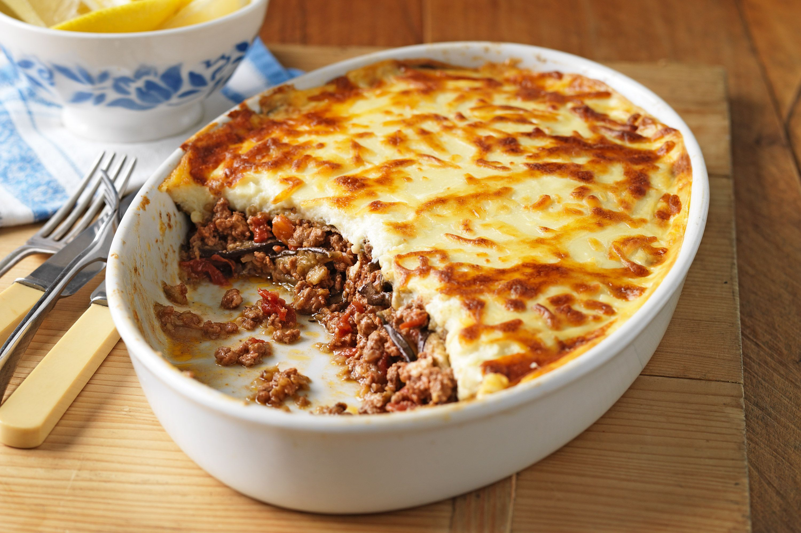
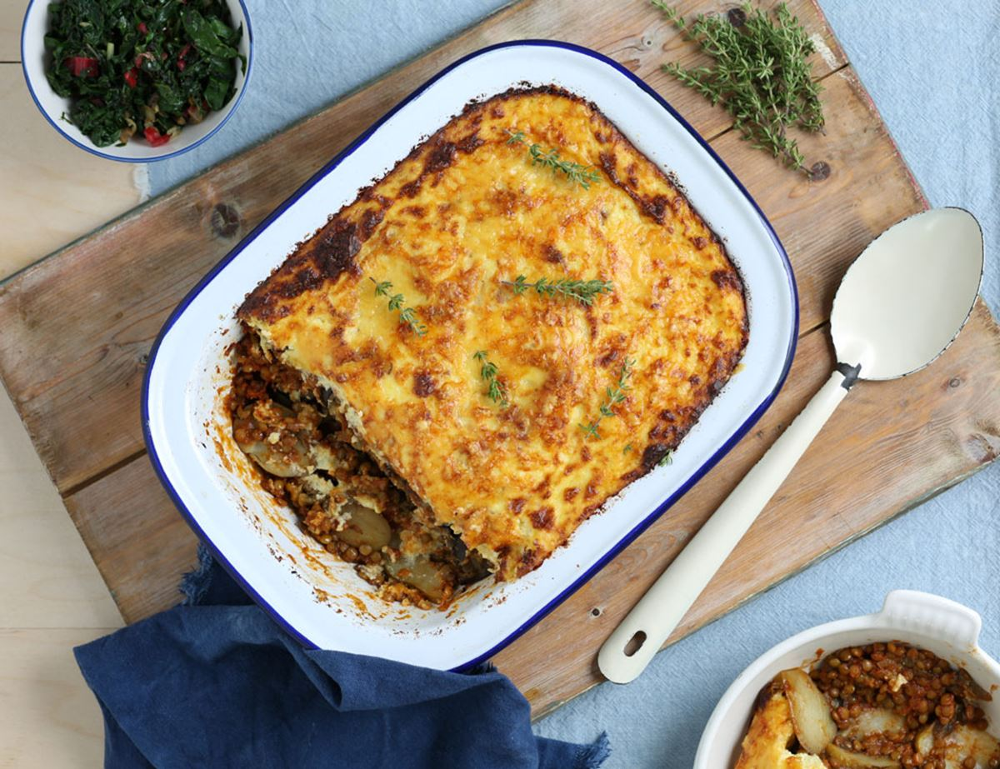
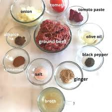

Musaka


Descriere si mod de preparare
Ingrediente:

- 6 cartofi mari, curățați și tăiați felii subțiri
- 1 ceapă mare, tocată
- 2 căței de usturoi, mărunțiți
- 500g carne tocată (de vită, porc sau amestec)
- 1 cutie (400g) roșii tocate
- 2 linguri de pastă de tomate
- 1 linguriță de cimbru uscat
- 1 linguriță de oregano uscat
- 1/2 linguriță de scorțișoară
- Sare și piper după gust
- 50g unt sau ulei de măsline
- 50g făină
- 500ml lapte
- Un vârf de cuțit de nucșoară
- 100g brânză parmezan sau cașcaval ras
Mod de preparare:
- Preîncălzește cuptorul la 180°C.
- Într-o tigaie mare, încinge un pic de ulei și călește ceapa și usturoiul până devin moi.
- Adaugă carnea tocată și prăjește-o până se rumenește. Scurge excesul de grăsime, dacă este necesar
- Adaugă roșiile tocate, pasta de tomate, cimbrul, oregano, scorțișoara, sare și piper. Lasă să fiarbă timp de aproximativ 10-15 minute, până când se formează un sos gros.
- Între timp, prepară sosul bechamel. Într-o cratiță, topiește untul sau încălzește uleiul și adaugă făina. Amestecă continuu timp de 1-2 minute până când făina devine ușor aurie.
- Încet, adaugă laptele cald, amestecând continuu pentru a evita formarea cocoloașelor. Gată sosul până când se îngroașă, apoi adaugă nucșoară, sare și piper după gust.
- Într-o tavă de copt unsă, așază un strat de felii de cartofi. Adaugă apoi jumătate din amestecul de carne, iar deasupra turnă sos bechamel.
- Repetă acești pași cu un alt strat de cartofi, carne și sos bechamel.
- Presară brânza rasă deasupra și coace la cuptor timp de aproximativ 45-50 de minute sau până când cartofii sunt moi și partea de sus este frumos aurie.
- Lasă musaka să se odihnească timp de câteva minute înainte de a o porționa și de a o servi
Pentru mai multe retete vizitati urmatoarele:
-
Jamiilla Cuisine
-
Savori Urbane